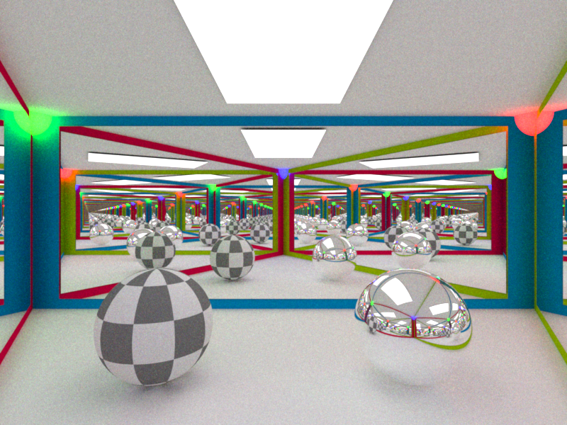
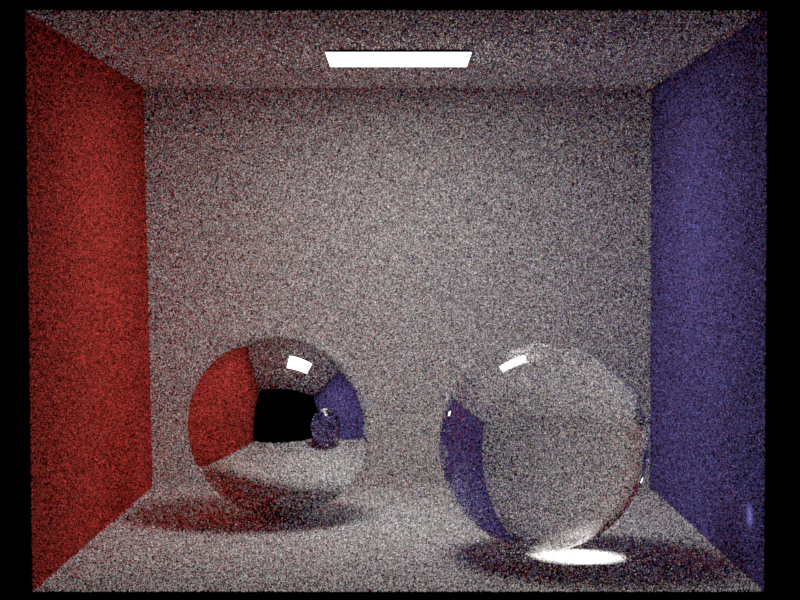
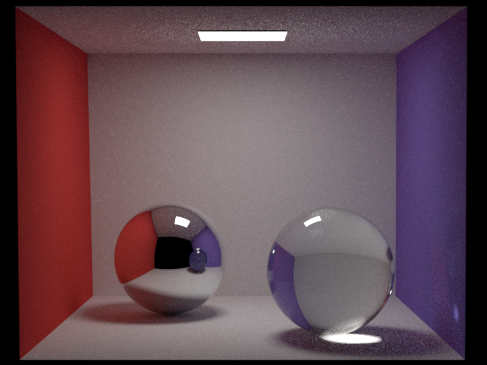
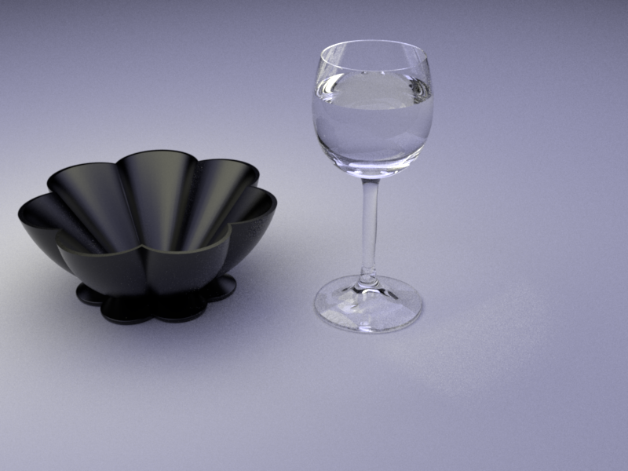
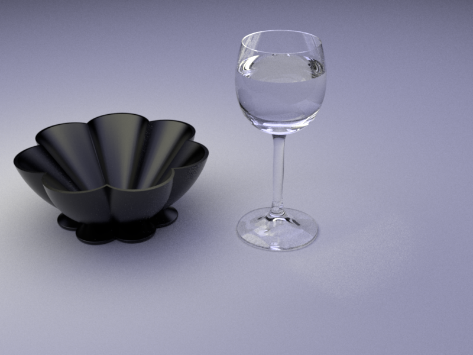
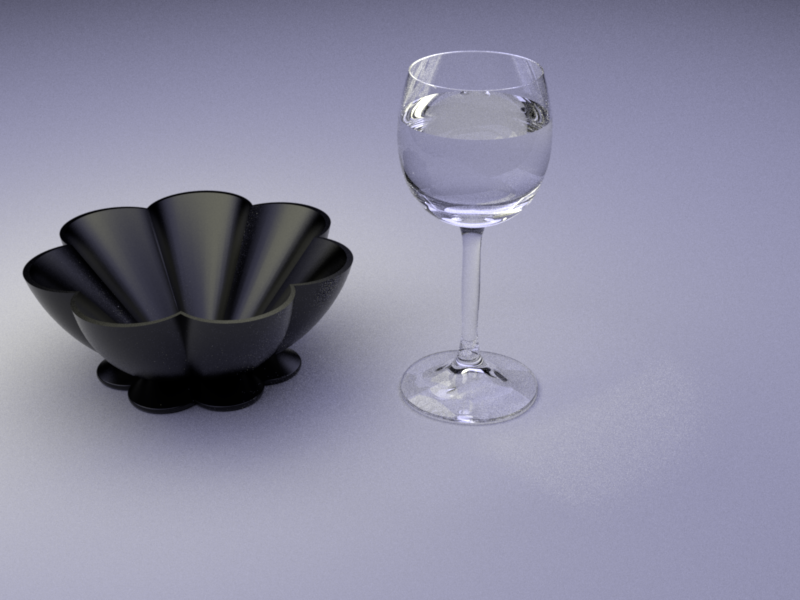

**Homework 4 - Global Illumination**
Student Name: Tao Zhang
Legi Number: 23-955-511
(Note: please read the [supplementary](#supplementary) section first before working on this report.)
# Part 1: Dielectric BSDF
**Time spent on this task: 6h**
**Describe your implementation of `Dielectric` class.**
Since `Dielectric` is discrete BRDF, we only need to consider `sample()`.
We first calculate `cosThetaI` as the cosine of the angle between the incident direction and the normal.
If `cosThetaI` is negative, we need to flip the normal `n` to `(0,0,-1)` instead of `(0,0,1)`.
Then we calculate `reflect_coefficient` using `fresnel()` and set `bRec.measure` as discrete.
Note that when `cosThetaI` is positive, `bRec.eta` is `m_extIOR` over `m_intIOR`, otherwise it is the opposite.
Then we generate a random number between 0 and 1, if it is smaller than `reflect_coefficient`, we reflect the ray,
otherwise we refract the ray.
In either case, we set the `bRec.wo` and return the radiance according the formulas in the lecture notes.
# Part 2: Path Tracing
## BSDF Sampling
**Time spent on this task: 6h**
**Describe your implementation of `path_mats`.**
We initialize the throughput `t` as `Color3f(1.0f)`, starting point `x_o` as `ray.o`
and incident direction `w_i` as `ray.d`.
We keep trace the (camera) ray until either the ray hits nothing, Russian roulette (RR) is terminated, or
the throughput is zero.
For each trace, we first construct a `traceRay` on `x_o` to `w_i` direction. We update `w_o` with the new
intersection point. If the intersection point is on an emitter, we aggregte `L_i` with `t` times the radiance of the emitter.
Then we spin the RR, with `successProb` as `min(t.maxCoeff(), 0.99f)`, if success, we update `t` with `t / successProb`.
Note that we only do RR after 3 bounces to reduce the noise. If we survive the RR, then update `w_i` with the newly sampled
direction from the BSDF. Then update `t` with `t * BSDFValue`.
I was very confused about why we set the success probability as `min(t.maxCoeff(), 0.99f)` at first. After a discussion with
two of the TAs, we figured out the intuition is: each time we do `t /= successProb`, `t` will be reset to 1, so later on
when we do `t *= BSDFValue`, `t` will be the BSDF value. So it is like we are doing RR based on the BSDF value.
## Multiple Importance Sampling
**Time spent on this task: 6h**
**Describe your implementation of `path_mis`.**
This is similar to `direct_mis` and `path_mats`. But we initialize additionally
a boolean value `trivial_mat = true`. It is set to True at the beginning because
the first bounce is from the camera so we do not have the PDF of the BSDF, so with
`trivial_mat` we would have `w_mat = 1.0f`.
For each trace, it is similar to `path_mats`. When `traceRay` hits emitter, if `trivial_mat` is true,
we set `w_mat` to be 1, otherwise it is calculated exactly the same as in `direct_mis` (except when the
denominator is zero, we set it to 1, because this case means the PDF of BSDF is zero which means its measure is discrete)
. Then we aggregate `L_i` with `t * w_mat * emitter_radiance`.
The RR is the same. Then we sample the BSDF and the
emitter. If the sample shadow ray from emitter is not blocked, then we calculate the contribution from emitter.
If the sampled BSDF measure is discrete, then we set `w_em = 0.0f` and there is simply no contribution from emitter to `L_i`,
otherwise we calculate `w_em` as in `direct_mis` (except when the denominator is zero, we set it to 0) and aggregate
`L_i` with `w_em * t * CosineTerm_em * BSDFValue_em * L_e_em / pdf_emitter`.
Then we do the remaining updates. If the BSDF measure is discrete, we set `trivial_mat` to be true,
otherwise we set it to be false and set update `pdf_bsdf_mat = bsdf->pdf(bRec_mat)` to be used for calculating
`w_mat` in the next trace. The rest is the same as in `path_mats`.
## Validation
**Comparison: CGL Triangle**

**Comparison: Cornell Box**


**Comparison: Table**

# Part 3: Photon Mapping
**Time spent on this task: 3h**
## Photon Emission from Shape Area Lights
**Describe your implementation of `AreaEmitter::samplePhoton(...)`.**
We first sample a point on `m_shape`, then we sample a direction on the cosine-weighted hemisphere oriented
with the normal of sampled point. Then the photon ray is from the sampled point to the sampled direction.
Its radiance is `M_PI` times `m_radiance` times the area of the surface, which is equal to divides by the PDF of
sampling the point on the surface.
Additionally, in `scene.h` we add a new function `Color3f samplePhoton()` which first samples a emitter, then
calls `samplePhoton()` on the emitter.
## Photon Tracing and Storage
**Describe your implementation of `PhotonMapper::preprocess(...)`.**
If the number of stored photons is less than `m_photonCount`, we keep tracing photons. We first sample a photon from
the scene, then the tracing process is almost identical to `path_mats`. One difference is when the `traceRay` hits
a surface and the surface is diffuse, then we store (push back onto the KD-tree) the photon with location at the intersection
point, direction as the reverse of its travel direction, and the power as the throughput times the original (previous) power.
The rest is the same as in `path_mats`. Another trivial difference is that this time we do not accumulate any radiance from the emitter.
Additionally, we create a new private variable `m_photonCount_emitted` which counts the number of photons emitted from the scene.
It will be used in `Li()` to estimate the radiance.
## Rendering/Radiance Estimation
**Describe your implementation of `PhotonMapper::Li(...)`.**
This is again almost identical to `path_mats`. The only difference is when after checking whether the intersection point is on an emitter,
we also check whether the intersection point is on a diffuse surface. If it is, then we estimate the radiance by: first
we find all the photons within the `m_photonRadius` of the intersection point using the `m_photonMap->search()`, then
we loop through all the resulting photons and aggregate the radiance to `L_i`, for each photon, the `BSDFValue` is calculated
using the direction of `traceRay` and the direction stored in the photon, then the radiance value is just
`t * BSDFValue * photon.getPower() / (M_PI * m_photonRadius * m_photonRadius * m_photonCount_emitted)`.
The rest is the same as in `path_mats`.
## Validation
**Comparison: CGL Triangle**
**Comparison: Cornell Box**
**Comparison: Table**
**Comparison: Clock**
# Feedback
**Use this section to provide feedback about this assignment (each task, the handout, Nori, etc.). We appreciate your opinions to help improve future homeworks and projects.**
Fine!
# Supplementary
* For each task, please note down the time you spent working through it and use at least a few sentences to describe your implementation. If applicable, also report the problems you encounter (e.g. whether or how it's solved, what is the difficult part).
* Please let us know to what extent your code is working (e.g. you only managed to work through part of this assignment, or your solution doesn't operate as expected in some corner cases). We encourage you to share your thinking process, and points will be granted based on your description even if the code is not 100% functioning.
* Nori generates both EXR and PNG format output. Please use PNG for image comparison in the report.
* This report template uses [Markdeep](https://casual-effects.com/markdeep/), which supports Markdown syntax in HTML file. For example usage, please refer to the [official demo document](https://casual-effects.com/markdeep/features.md.html).
* LaTeX is also supported for typing mathematical formulas:
$$
L_o(\mathbf{x}, \omega_o) = \int_{\Omega} L_i(\mathbf{x},\omega_i)\, f(\mathbf{x}, \omega_i, \omega_o)\, |\cos\theta_i|\, \mathrm{d}\omega_i
$$


 
